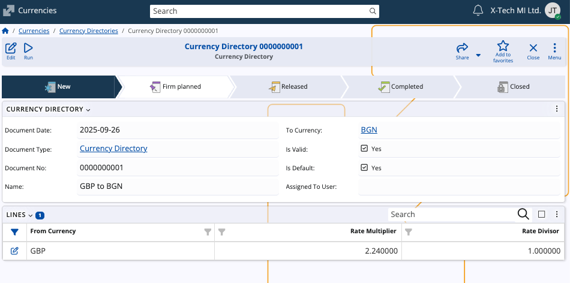
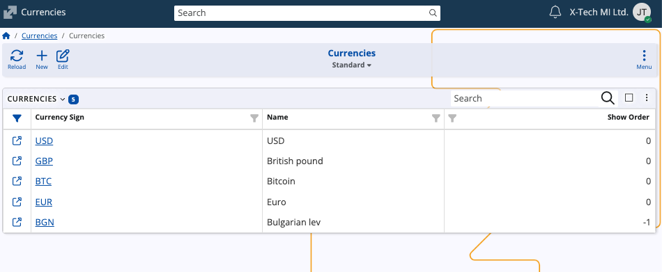

Currencies
The Currencies submodule defines and manages the currencies used throughout the system.
It ensures consistency when recording transactions, issuing documents, and maintaining exchange rates across enterprise companies.
Structure
The page is composed of two panaels: the user-defined Currencies and Currency directories.

Currency directories
The Currency Directories panel contains named sets of currency exchange rates against a single base currency for a given date.
Multiple directories with different names can exist for the same date, allowing separate rate sets.

Each directory carries the following basic information:
- Name – A descriptive unique label for the directory (for example, GBP to BGN).
- To Currency – The target currency for the conversions of the directory.
- Is Valid – Indicates whether the directory is active for use.
- Is Default – Marks the directory as the default one for conversions. When there are more than one default directory, the last default directory is used.
The Lines panel is used to define the actual exchange rates used in the directory:
- From Currency – The currency being converted from.
- Rate Multiplier – The multiplier applied when converting from the source currency.
- Rate Divisor – The divisor applied during conversion.

Create a currency directory
To create a new currency directory:
In Currency Directories, click on New from the toolbar.

A creation form will open where two fields are required:
Name – Provide a descriptive name (for example, USD to EUR).
To Currency – Select the target currency.
You can optionally mark Is Valid and Is Default.
In the Lines section, you can choose to add one or more currency pairs now or later:

- Choose a suitable From Currency from the dropdown list.
- Enter preferred Rate Multiplier and Rate Divisor values.
When ready, select Save and close to create the directory
Once saved, the directory can be edited or updated as needed.
Currencies
The Currencies panel lists all user-defined currencies available in ERP.net. Each record shows the currency sign, name, and show order.
From this panel, you can add new currencies or edit existing ones to align with your organization's requirements.

Note
The screenshots taken for this article are from v.26 of the platform.